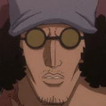

Admirals
Admiral is the second highest rank in the hierarchy of the Marines, senior to a vice admiral and junior to the fleet admiral. There are only three admirals serving at a given time, and in light of their status as the strongest Marine officers, they count among the most powerful people in the World Government's service.
| Image | Name | status |
|---|---|---|
| Borsalino (Kizaru) | Admiral | |
 |
Issho (Fujitora) | Admiral |
| Aramaki (Ryokugyu) | Admiral | |
| Sakazuki (Akainu) | Promoted to Fleet Admiral | |
| Sengoku | Former Fleet Admiral (retired) | |
|  | Kuzan (Aokiji) | Resigned from Position |
Borsalino
Borsalino, more commonly known by his alias Kizaru, is an admiral in the Marines. After Kuzan resigned from the Marines and Sakazuki was promoted to fleet admiral, Kizaru is now the only remaining admiral from the previous trio.
Kizaru is an incredibly tall, relatively slim man, roughly the same size as the other two ex-admirals Aokiji and Akainu. He is of middle age with a moderate amount of wrinkles on his face, short curly black hair, and a very thin beard. He is older than the other two admirals, a fact that is reflected in his looks. Kizaru's standard outfit consists of a yellow striped suit with a Marine coat draped over his shoulders like a cape, with his arms not in its sleeves. Kizaru also wears pure white shoes, gold-amber tinted sunglasses, and a dark green shirt with a mauve tie under his yellow suit. There is a tiny Black Den Den Mushi on his left wrist, like a wristwatch, underneath the sleeve of his suit. He is generally seen wearing a relaxed grin on his face.
Kizaru comes off as perpetually calm, equable, easygoing, and taking most things lightly no matter the severity of the situation. He talks in a calm voice suiting this demeanor: in a slow, sarcastically intonated manner with the last syllable of a sentence often drawn out. He is prone to beginning sentences with a stressed "ooh", such as when observing something surprising or that piques his interest. Still, despite such laxity, Kizaru's register is quite formal (compared to Aokiji's more colloquial or Akainu's rougher, more derogatory speech patterns), taking care to address certain people with an honorific (such as his superior or even a pirate of high status). With an ever-relaxed air in or out of combat, Kizaru is almost never shown losing his cool, raising his voice, or getting excited to prompt action. With his Logia intangibility, he can afford remaining apathetic to most enemy attempts to harm him, paying extremely sudden or surprisingly potent attacks little to no mind if they come from much weaker opposition, to the point of not visibly reacting at all when shot in the head.
Kizaru ate the Pika Pika no Mi, a Logia-type Devil Fruit that allows him to create, control, and transform his body into light. Among other things, he is able to move, travel, and perform kicks at the speed of light, shoot laser beams, and blind his opponents.
Issho
Issho, better known by his alias Fujitora, is an admiral in the Marines. He was conscripted through a World Military Draft during the two-year timeskip, being appointed to his rank (next to Ryokugyu) to fill the two admiral vacancies caused by Kuzan's resignation and Sakazuki's promotion. A proponent of "Humane Justice", Fujitora notably spearheaded a campaign for the abolishment of the "Seven Warlords of the Sea" system, which came to pass during the most recent Levely.
Fujitora is a blind man with only the whites of his eyes showing, though he usually keeps both eyes closed. He has an X-shaped scar centered on the left side of his forehead that stretches over both eyes, which was actually self-inflicted due to his decision to blind himself. He has short dark hair, a mustache, and a beard. He seems to be very tall, a trait shared with other admirals. Like other admirals, Fujitora sports the standard Marine coat with his personal clothes underneath, wearing the coat on his shoulders like a cape with his arms not in the sleeves. His sleeves' cuffs are purple. While previous admirals and other high-ranked Marines wear the conventional suit and tie underneath their Marine coats, Fujitora opts for a light-purple yukata held up with a dark purple belt, all underneath a purple cloak, matching the color in his alias. Fujitora wields a shikomizue (a Japanese swordstick) that doubles as a cane for his blindness, and also wears geta sandals. He has white bandages wrapped around both of his forearms, with handguards on both hands.
Fujitora is a virtuous man who cares greatly about doing the right thing and detests evil. His blindness is a result of him intentionally inflicting damage on his eyes out of sorrow for all the evil he had seen, with him stating that not having sight is a blessing. His Justice motto as a Marine is "Humane Justice". His primary goal is to protect people, telling a subordinate that it is more important to take into account the number of lives to protect rather than the number of enemies against them. He takes care to never put innocent civilians in harm's way during conflict and will try to avoid causing collateral damage with his attacks; when he does inflict such damage, he makes sure to compensate the owner of the involved property. Fujitora will make the effort to keep civilians away from harm even when he himself is not involved in the proceedings, including doing things such as protecting them from the collateral damage of other fights. As a result of his desire to protect civilians, Fujitora is proactive about hunting down and capturing pirates and other criminals. He will not step outside his bounds to do so, but he did plot with his subordinates to arrest the criminals competing there as soon as they exited the arena's confines.
Fujitora ate the Zushi Zushi no Mi, a Paramecia-type Devil Fruit that allows him to manipulate gravitational forces. The ability's range of effect can potentially span wide areas, even entire islands, and is primarily channeled through the admiral's sword.
Aramaki
Aramaki, better known by his alias Ryokugyu, is an admiral in the Marines. He was conscripted through a World Military Draft during the two-year timeskip, being appointed to his rank (next to Fujitora) to fill the two admiral vacancies caused by Kuzan's resignation and Sakazuki's promotion.
Ryokugyu is a muscular man with thick and wild, green-colored hair that reaches to his neck. He appears to be quite tall, as he looked comparable to fellow admiral Fujitora who stands at 2.7 meters. On his face, he has a somewhat pronounced nose and lips as well as a light goatee and sideburns. Ryokugyu does not wear a shirt, whereby exposing a large kanji tattoo (meaning "double suicide at death river") running down the left side of his chest. He wears a pair of dark-colored pants with light flower designs on the left leg, whereas the right leg has a few small tears. Additionally, he wears a pair of sunglasses over his eyes and the standard Marine coat cape draped on his shoulders, which covers his otherwise bare back and bears the usual pure-gold epaulettes seen with other admirals, plus green turn-up sleeve cuffs to match his color motif.
Ryokugyu is shown to act in a casual and uncouth manner, being unafraid of expressing his mind. With friends and allies, he has been shown to act quite jovial and conversational, as seen by his talk with fellow admiral Fujitora. With enemies, however, Ryokugyu has expressed open contempt much like his direct superior Sakazuki, whom he wishes to emulate out of admiration. Ryokugyu agrees with Sakazuki's principle of never holding back when battling enemies and is very much a follower of Absolute Justice. His Justice motto, accordingly, is called "Determined Justice".
Ryokugyu ate the Mori Mori no Mi, a Logia-type Devil Fruit that allows him to create, control, and transform his body into plant life. The plants he creates can be grown rapidly and moved around freely, seemingly not being limited by any rigidity that some plants, such as trees, normally possess. Notably, as plants are a solid element, he cannot turn intangible, though he will regenerate from any damage. Interestingly, he regenerates by sprouting out of the ground and growing back into his normal self.
Sakazuki
Sakazuki, formerly known by his admiral alias Akainu, is the current fleet admiral of the Marines, succeeding the previous fleet admiral, Sengoku. During the first half of the series, he was one of the three admirals, and was the last one out of the three to debut. Upon becoming the fleet admiral, one of Sakazuki's first decisions was to relocate Marine Headquarters into the New World in preparation for the New Pirate Age.
Sakazuki is an incredibly tall, light-skinned, unusually muscular man. He's about as tall as his fellow admirals, with a square-shaped face, very pronounced facial features, and short black hair. He stands at 306 cm (10'). He usually wears a standard Marine cap and sports a crimson, double-breasted suit, decorated with a pink rose on his left buttonhole. Unlike many high-ranking Marines, he does not wear a tie, but instead leaves his light red colored flower-patterned shirt unbuttoned, showing his muscular neck and part of his tattoo. He wears black gloves and black shoes. The tattoo on the left side of his chest is black, containing numerous images of flowers integrated into its design. Sakazuki's tattoo has flame-shaped edges, and it extends from the admiral's left shoulder to his hip, covering part of his back and ribs. He has another, smaller tattoo in the shape of a black sword on his right deltoids and a small part of the biceps.
While he is a strong and capable leader who has done well to consolidate the power and prestige of the Marines, Sakazuki would be best categorized as an extremist and highly dogmatic. He is an adamant believer in Absolute Justice and is ruthless in his maintenance of it, his derived motto being "Thorough Justice". He has a stern, dead-serious disposition, is grim, expressionless, and was the most ruthless out of three admirals pre-timeskip. This has given him a very fearsome reputation, but of greater concern is his dogmatism, which may end up making the Marines into a force that is worse than the enemies they hope to eliminate. Despite this disposition, Sakazuki seems to be able to restrain himself at times, such as letting his colleague Aokiji leave the Marines after he lost a ten-day duel for the position of fleet admiral.
Sakazuki ate the Magu Magu no Mi, a Logia-type Devil Fruit that allows him to create, control, and transform his body into magma. His magma is extremely hot and highly explosive, thus making it well-suited for combat, allowing Sakazuki to burn, melt, and destroy anything in his path—in fact, among all Devil Fruits, Sakazuki's is said to offer the greatest attack power.
Sengoku
Sengoku the Buddha is a former fleet admiral of the Marines, preceding Sakazuki. He retired from his leadership position after the Summit War of Marineford, but remained in the Marines as an inspector general.
Sengoku is a tall, fair-skinned, and muscular man with a long, braided goatee and a mustache. He is usually seen alongside his pet goat. His cap covers his hair, which is set in a large afro. Ironically, prior to the timeskip, despite already being an elderly man upon his debut (being 77 years old at the time), Sengoku displayed little to no physical signs of his actual age, with his hair still not having grayed after 20 years. He typically wears black-rimmed glasses and a white and gold full Marine admiral uniform that is adorned with medals. The most distinctive features of this uniform are a life-size seagull on top of his cap, and his oversized Marine coat which he wears like a cape. His coat has the kanji for justice, in blue, emblazoned on the back, and has unique colored cuffs, with his being white.
Sengoku appears to be an exceedingly proud, enlightened, and intelligent man who was loyal to the World Government and, up until the cover-up of the Impel Down incident, never questioned orders from them. He also will not accept any reason for letting a criminal go, and also has a habit of getting very irritated with failure. His motto is "Reigning Justice", in that he prioritizes upholding justice over all things, although he certainly does not shy away from actions that fall under the code of Absolute Justice. From his view, the Seven Warlords of the Sea are just pirates, though he notes how valuable they can be when the time comes. However, as the years went by, he appeared to be losing his faith in the government, shown after the Summit War of Marineford when he was furious at the order from the Five Elders to suppress the second escape incident in Level 6 of Impel Down to save face and keep the faith of the people, thus placing nations in danger. This eventually led Sengoku to resign from the Marines.
Sengoku ate the Hito Hito no Mi, Model: Daibutsu, a Mythical Zoan-type Devil Fruit that allows him to transform into a giant golden Buddha and a human-Buddha hybrid at will. This power is the source of his nickname, "Sengoku the Buddha". A number of Marines claimed that they have never seen him use this power before the war.
Kuzan
Kuzan, better known by his former alias Aokiji, is one of the Ten Titanic Captains of the Blackbeard Pirates, as the captain of the Tenth Ship. Before joining Blackbeard's crew, he served as a Marine admiral, having been taught by Monkey D. Garp. He was nominated by Sengoku for the position of fleet admiral; however, after fighting Sakazuki for the position and losing, Kuzan resigned from the Marines.
Kuzan is an incredibly tall, slim, yet muscular man. At 298 cm tall, he is just slightly shorter than the other two admirals pre-timeskip and he is the shortest of the Blackbeard Titanic Captains. He has black, curly hair cut to chin length that fans out at the tips, tanned skin, and an altogether lean, long build. His standard outfit while in the Marines consists of a white buttoned-up vest with standing collar over a long-sleeved navy-blue shirt, with matching white trousers and black dress shoes. This is all rarely accompanied by a matching white suit jacket. He also wears a yellow tie divided geometrically by black lines and a sleep mask on his forehead. Kuzan had a white Marine admiral's coat (golden epaulettes and for him being the ice user, blue cuffs) draped over him like a cape. He was also seen wearing a green and purple sleep mask at all times two years ago from the present timeline. His looks, combined with his manner, make him appear even younger than he actually is.
Kuzan is a very laid-back man, showing no shock or surprise from almost anything. His lack of interest and "Lazy Justice" (as he describes his motto himself) often leads others to believe he cannot possibly be a marine of such a high ranking, which causes them to underestimate him, making him all the more dangerous. However, if he deems a situation worthy, he will take action. During the Whitebeard War at Marineford, Aokiji grudgingly shredded his usual lax and friendly nature, for a more ruthless and aggressive personality, repeatedly targeting Whitebeard himself.
Kuzan ate the Hie Hie no Mi, a Logia-type Devil Fruit that allows him to create, control, and transform his body into ice. Compared to most Logia users who, when transformed, can let physical attacks pass through their "fluid" bodies, Kuzan is more easily hit since ice is a solid element. However, he still goes unharmed by enemy attacks that are not infused with Haki; instead of dissipating out of harm's way, his body shatters apart when struck, only to reform as effortlessly as any Logia user thereafter.
Candidates to Become Admiral
Candidates
Monkey D. Garp
- Epithet: Garp the Fist
- Refused every promotion, not wanting to serve the World Nobles
Gion

- Code Name: Momousagi
- Passed over in favor of Fujitora and Ryokugyu
Tokikake
- Code Name: Chaton
- Passed over in favor of Fujitora and Ryokugyu